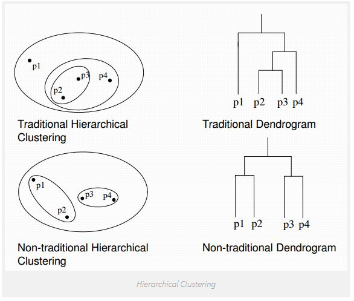
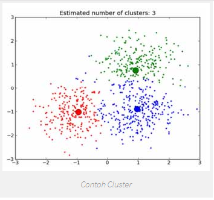
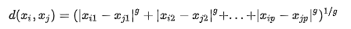
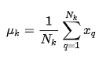
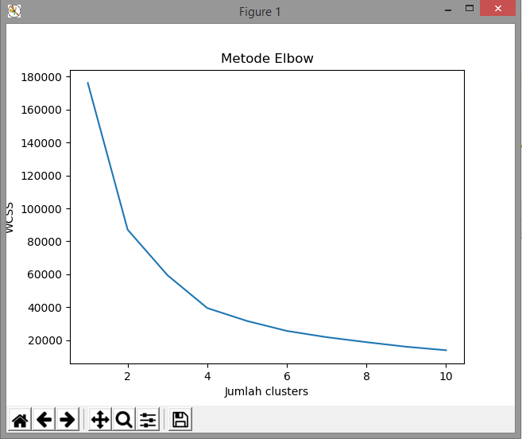
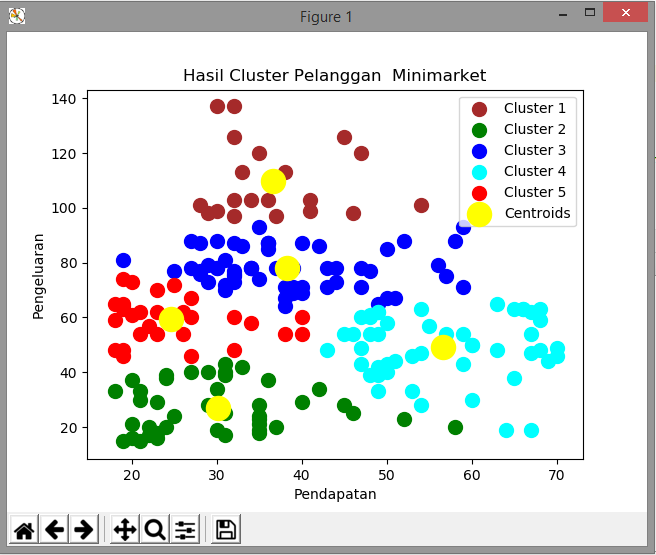

K-Means Clustering¶
Pendahuluan¶
K-means merupakan salah satu algoritma clustering . Tujuan algoritma ini yaitu untuk membagi data menjadi beberapa kelompok. Algoritma ini menerima masukan berupa data tanpa label kelas. Hal ini berbeda dengan supervised learning yang menerima masukan berupa vektor (x1 , y1) , (x2 , y2) , …, (xi , yi), di mana xi merupakan data dari suatu data pelatihan dan yi merupakan label kelas untuk xi.
Pada algoritma pembelajaran ini, komputer mengelompokkan sendiri data-data yang menjadi masukannya tanpa mengetahui terlebih dulu target kelasnya. Pembelajaran ini termasuk dalam unsupervised learning. Masukan yang diterima adalah data atau objek dan k buah kelompok (cluster) yang diinginkan. Algoritma ini akan mengelompokkan data atau objek ke dalam k buah kelompok tersebut. Pada setiap cluster terdapat titik pusat (centroid) yang merepresentasikan cluster tersebut.
K-Means Clustering adalah suatu metode penganalisaan data atau metode Data Mining yang melakukan proses pemodelan tanpa supervisi (unsupervised) dan merupakan salah satu metode yang melakukan pengelompokan data dengan sistem partisi.
Terdapat dua jenis data clustering yang sering dipergunakan dalam proses pengelompokan data yaitu Hierarchical dan Non-Hierarchical, dan K-Means merupakan salah satu metode data clustering non-hierarchical atau Partitional Clustering.

Metode K-Means Clustering berusaha mengelompokkan data yang ada ke dalam beberapa kelompok, dimana data dalam satu kelompok mempunyai karakteristik yang sama satu sama lainnya dan mempunyai karakteristik yang berbeda dengan data yang ada di dalam kelompok yang lain.

Dengan kata lain, metode K-Means Clustering bertujuan untuk meminimali sasikan objective function yang diset dalam proses clustering dengan cara meminimalkan variasi antar data yang ada di dalam suatu cluster dan memaksimalkan variasi dengan data yang ada di cluster lainnya.

Algoritma untuk melakukan K-Means clustering adalah sebagai berikut:
- Pilih K buah titik centroid secara acak
- Kelompokkan data sehingga terbentuk K buah cluster dengan titik centroid dari setiap cluster*merupakan titik *centroid yang telah dipilih sebelumnya
- Perbaharui nilai titik centroid
- Ulangi langkah 2 dan 3 sampai nilai dari titik centroid tidak lagi berubah
Proses pengelompokkan data ke dalam suatu cluster dapat dilakukan dengan cara menghitung jarak terdekat dari suatu data ke sebuah titik centroid. Perhitungan jarak Minkowski dapat digunakan untuk menghitung jarak antar 2 buah data. Rumus untuk menghitung jarak tersebut adalah:

Di mana:
g = 1, untuk menghitung jarak Manhattan
g = 2, untuk menghitung jarak Euclidean
g = ∞, untuk menghitung jarak Chebychev
xi , xj adalah dua buah data yang akan dihitung jaraknya
p = dimensi dari sebuah data

Pembaharuan suatu titik centroid dapat dilakukan dengan rumus berikut:
Di mana:
µk = titik centroid dari cluster ke-K
Nk = banyaknya data pada cluster ke-K
xq = data ke-q pada cluster ke-K
Kelebihan dan kekurangan k-means clustering
Ada beberapa kelebihan pada algoritma k-means, yaitu:
a. Mudah untuk diimplementasikan dan dijalankan.
b. Waktu yang dibutuhkan untuk menjalankan pembelajaran ini relatif cepat.
c. Mudah untuk diadaptasi.
d. Umum digunakan.
Ada pula beberapa Kekurangan pada k-means
a. Sebelum algoritma dijalankan, K buah titik diinisialisasi secara random sehingga pengelompokkan data yang dihasilkan dapat berbeda-beda. Jika nilai random untuk kinisialisasi kurang baik, maka pengelompokkan yang dihasilkan pun menjadi kurangoptimal.
b. Dapat terjebak dalam masalah yang disebut curse of dimensionality. Hal ini dapat terjadi jika data pelatihan memiliki dimensi yang sangat tinggi (Contoh jika data pelatihan terdiridari 2 atribut maka dimensinya adalah 2 dimensi. Namun jika ada 20 atribut, maka akanada 20 dimensi). Salah satu cara kerja algoritma ini adalah mencari jarak terdekat antarak buah titik dengan titik lainnya. Jika mencari jarak antar titik pada 2 dimensi, masih mudah dilakukan. Namun bagaimana mencari jarak antar titik jika terdapat 20 dimensi.Hal ini akan menjadi sulit.
c. Jika hanya terdapat beberapa titik sampel data, maka cukup mudah untuk menghitungdan mencari titik terdekat dengan k titik yang diinisialisasi secara random. Namun jikaterdapat banyak sekali titik data (misalnya satu milyar buah data), maka perhitungan dan pencarian titik terdekat akan membutuhkan waktu yang lama. Proses tersebut dapatdipercepat, namun dibutuhkan struktur data yang lebih rumit seperti kD-Tree atau hashing.
Implementasi¶
Berikut ini program implementasi K-Means Clustering dataset pengunjung market menggunkana algoritma bahasa pemrograman python
Silahkan menginstal library yang diperlukan dalam implementasi dalam pip`:
Pip install numpy
Pip install matplotlib.pyplot
Pip install pandasLangkah 1: import bahan bahan/ library yang dibutuhkan.
import numpy as np
import matplotlib.pyplot as plt
import pandas as pdLangkah 2 : Input data csv dengan pandas yaitu data pengunjung_market.csv
dataset = pd.read_csv('Pengunjung_market.csv')
X = dataset.iloc[:, [ 2, 3]].valuesLangkah ke 3 : Menampilkan tabel
print(dataset.head())Langkah ke 4 : Menggunakan metode elbow untuk menentukan angka cluster yang tepat
from sklearn.cluster import KMeans
wcss = []
for i in range(1, 11):
kmeans = KMeans(n_clusters=i, init='k-means++', random_state=42)
kmeans.fit(X)
wcss.append(kmeans.inertia_)
plt.plot(range(1, 11), wcss)
plt.title('Metode Elbow')
plt.xlabel('Jumlah clusters')
plt.ylabel('WCSS')
plt.show()Langkah ke 5 : Menjalankan K-Means Clustering ke dataset
kmeans = KMeans(n_clusters=5, init='k-means++', random_state=42)
y_kmeans = kmeans.fit_predict(X)Langkah ke 6 : Visualisasi hasil clusters
plt.scatter(X[y_kmeans == 0, 0], X[y_kmeans == 0, 1], s=100, c='brown', label='Cluster 1')
plt.scatter(X[y_kmeans == 1, 0], X[y_kmeans == 1, 1], s=100, c='green', label='Cluster 2')
plt.scatter(X[y_kmeans == 2, 0], X[y_kmeans == 2, 1], s=100, c='blue', label='Cluster 3')
plt.scatter(X[y_kmeans == 3, 0], X[y_kmeans == 3, 1], s=100, c='cyan', label='Cluster 4')
plt.scatter(X[y_kmeans == 4, 0], X[y_kmeans == 4, 1], s=100, c='red', label='Cluster 5')
plt.scatter(kmeans.cluster_centers_[:, 0], kmeans.cluster_centers_[:, 1], s=300, c='yellow', label='Centroids')
plt.title('Hasil Cluster Pelanggan Minimarket')
plt.xlabel('Pendapatan')
plt.ylabel('Pengeluaran')
plt.legend()
plt.show()sehingga output dapat dilihat, program menampilkan plot yang menggunakan metode elbow untuk melihat akurasi

kemudian bisa dilihat gambar di bawah ini terdapat 5 cluster dengan ciri warna yang berbeda sesuai dengan titik terdekat dari centroid.